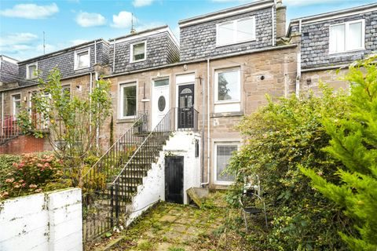
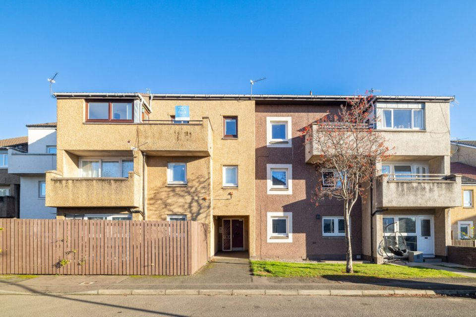
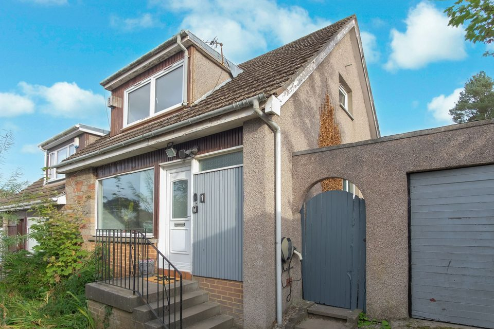
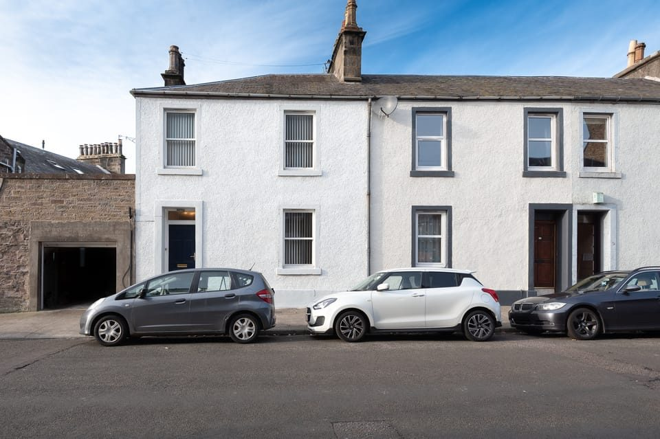
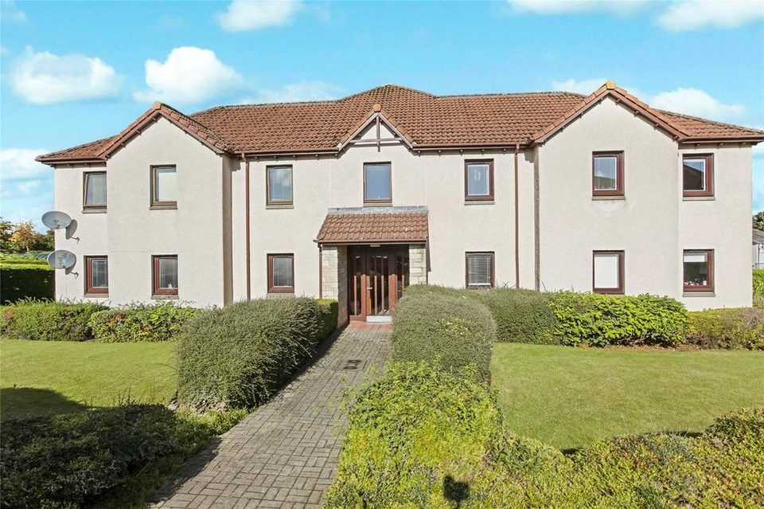
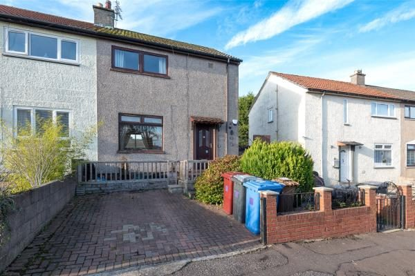

First-floor maisonette2 bedrooms

£120,000
Blyth Place, Dundee
West End
Approx. 1.6 miles · 31 min walk from Tip Top
Listed 18 November 2026 · Slater Hogg & Howison
Original agent page unavailable; portal listing linked.
Daily property watch
Homes for sale · 2–3 bedrooms · Up to £270,000
Updated 19 November 2026 · 8 new · 2 price changes · 227 in the archive

West End
Approx. 1.6 miles · 31 min walk from Tip Top
Listed 18 November 2026 · Slater Hogg & Howison
Original agent page unavailable; portal listing linked.

Area to confirm
Approx. 0.7 miles · 13 min walk from Tip Top
Listed 18 November 2026 · Tula Property

City Centre
Walking distance unavailable
Listed 17 November 2026 · Braveheart Auctions
Auction scheduled for 25 November 2026. Auctioneer terms state a 3% buyer administration fee with a £3,000 minimum plus VAT. The flat would benefit from refurbishment.

Balgillo
Approx. 4.9 miles · 93 min walk from Tip Top
Listed 24 September 2026 · Smart Sales & Investments
Previously reported · Price changed from £185,000 to £188,000

West End
Approx. 2.6 miles · 53 min walk from Tip Top
First seen 19 November 2026; listing date unavailable · J Myles & Co
Original agent page unavailable; portal listing linked.

Central Broughty Ferry
Walking distance unavailable
First seen 19 November 2026; listing date unavailable · Thorntons

Broughty Ferry
Approx. 5.0 miles · 94 min walk from Tip Top
First seen 7 October 2026; listing date unavailable · Slater Hogg & Howison
Original agent page unavailable; portal listing linked.

Area to confirm
Approx. 2.6 miles · 50 min walk from Tip Top
First seen 19 November 2026; listing date unavailable · Lindsays

Area to confirm
Approx. 2.9 miles · 56 min walk from Tip Top
First seen 19 November 2026; listing date unavailable · Lindsays

Balgay
Approx. 1.7 miles · 35 min walk from Tip Top
First seen 19 September 2026; listing date unavailable · Thorntons Property
Previously reported · Price changed from £120,000 to £112,000

Area to confirm
Walking distance unavailable
Listed 17 November 2026 · Campbell Boath

Riverside
Approx. 2.0 miles · 39 min walk from Tip Top
Listed 17 March 2026 · McCash Property Haus
Original agent page unavailable; portal listing linked.

Area to confirm
Approx. 0.5 miles · 11 min walk from Tip Top
First seen 17 November 2026; listing date unavailable · Lindsays

Area to confirm
Approx. 0.5 miles · 10 min walk from Tip Top
First seen 17 November 2026; listing date unavailable · Lindsays

Hilltown
Walking distance unavailable
Listed 11 November 2026 · Auction House Scotland
Auction 17 December 2026. Administration charge 3.6% including VAT of purchase price, minimum £3,600 including VAT, payable on exchange; legal-pack disbursements may also apply.

Lochee
Approx. 1.7 miles · 35 min walk from Tip Top
Listed 14 November 2026 · Harmony Homes

City Quay
Approx. 1.8 miles · 34 min walk from Tip Top
Listed 13 November 2026 · Harmony Homes
Previously reported · Price changed from £260,000 to £250,000

West End
Walking distance unavailable
First seen 15 November 2026; listing date unavailable · Thorntons Property
City Quay
Approx. 1.8 miles · 34 min walk from Tip Top
Listed 13 November 2026 · Harmony Homes

Ballumbie
Approx. 3.8 miles · 73 min walk from Tip Top
Listed 13 November 2026 · Axis Property
Original agent page unavailable; portal listing linked.